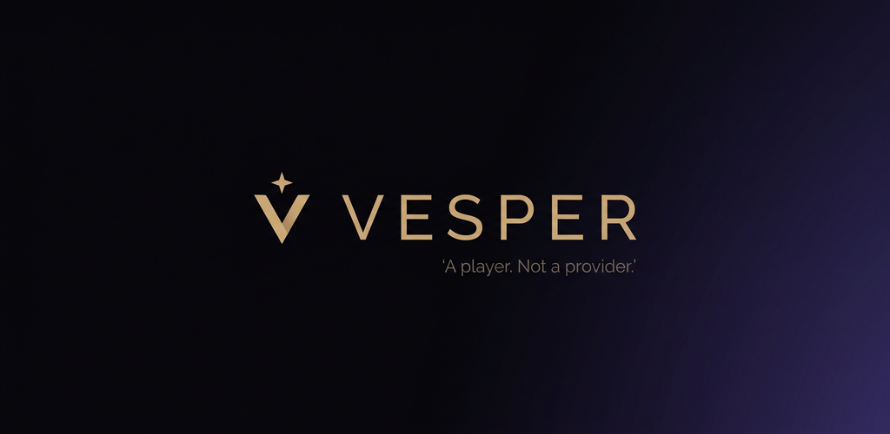
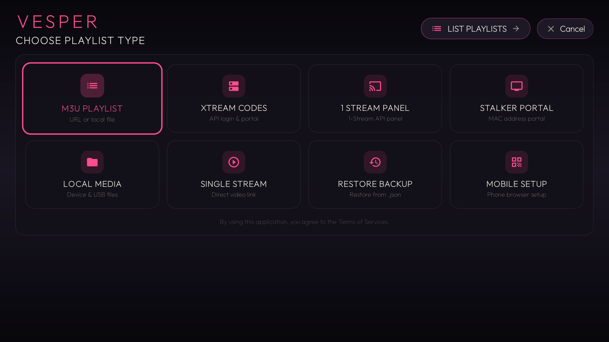
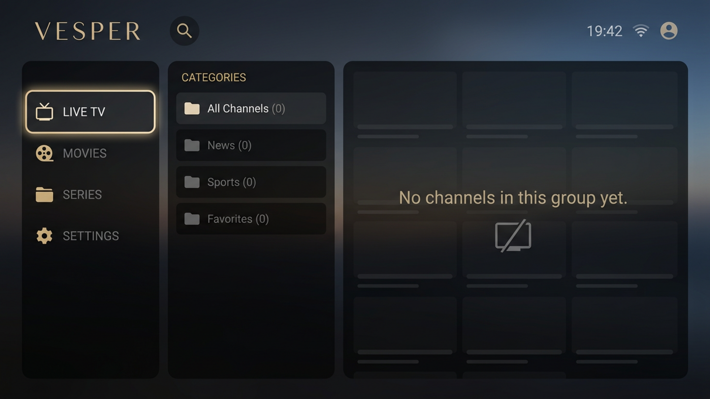
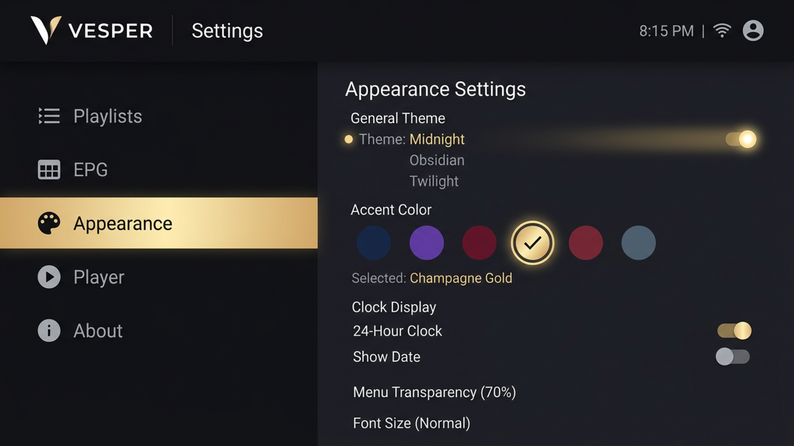
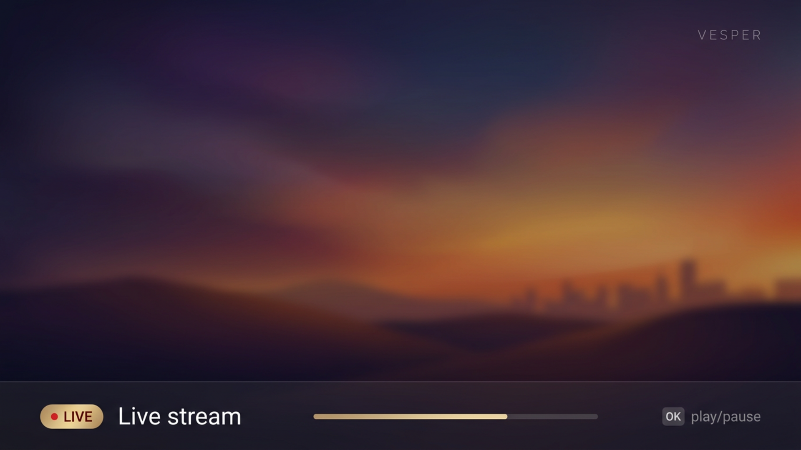

VESPER A player.
Not a provider.
The effortless 10-foot IPTV player for Android TV. It does not provide channels, movies, or series — you add your own M3U, local file, or Xtream portal. TiviMate-style three-pane Home, full-screen EPG, catch-up, and local PVR.

Everything you expect from a premium TV player. Nothing you don't.
Built for Android TV sticks and boxes with Compose + androidx.tv + Media3.
Three-pane Home
Categories · Groups · Channels / Posters. D-pad native.
Full-screen EPG
XMLTV & Xtream EPG grid, detail, search, catch-up.
Movies & Series
Posters, continue watching, detail.
2 / 4 / 9 Multi-view
Hard decoder budget.
Local PVR
Optional SAF recording.
Parental & Backup
PIN, backup/restore, four themes.
Search & Continue
Global search, favorites.
M3U / Xtream
M3U URL, file, or Xtream portal.
Low-RAM Tuned
Baseline profiles, R8 minify.
Designed for the couch, not the desk.
Actual Android TV build.




Install Vesper on your Android TV
APKs are hosted in this public repo's Releases.
Get the latest APK
Package com.nova.iptv • Version pending
https://r766746.github.io/vesper-website/Unavailable until a verified release is published- TV Settings → Security → Unknown sources → Allow Downloader
- Open Downloader, enter
r766746.github.io/vesper-website - Download APK → Install
- Open Vesper → Add Playlist
adb connect <tv-ip>
adb install -r app-release.apkA player. Not a provider.
Does Vesper include channels?
No. First launch is Add Playlist only.
Why two repos?
The Android source is private. This public vesper-website repository hosts only the website and APK releases.
How are APKs published?
Each signed Vesper APK is checked locally, then manually uploaded to this repository's GitHub Releases page.